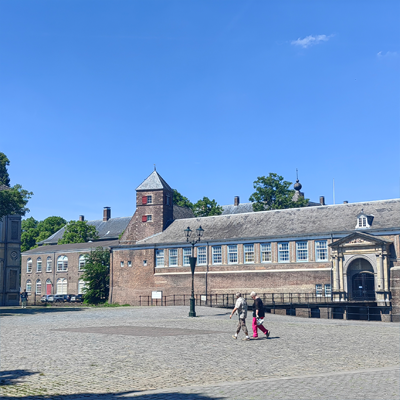

由于出国考察任务我曾途经荷兰,虽然时间不长但是印象深刻,荷兰的城市堪称花园,荷兰人对人工开凿建造水道颇有心得,有星罗棋布的大大小小水道.荷兰人的街道比较窄但是居民的庭院却很大,庭院里通常会种很多花草,小猫和天鹅、鸽子都和谐地和人生活.很多荷兰人喜欢躺在草坪上放空和发呆.我不会说荷语,但是在荷兰说英语当地人基本能懂并交流.
在荷兰时,我曾想在如此优美的环境里,没有生活的压力的情况下,人到底该做些什么?
人的幸福感是阶段性的,当已经习惯了以往向往的生活,就会陷入空虚和无聊.我曾见过很多移民在荷兰的公园里大声嚎叫、亦或者是掏出大麻旁若无人地准备开始享用.这让我觉得是对这个优美环境的浪费.但是他们确实也不知道该努力做些什么.
目标和意义总是需要我们主动去寻找的,也是我们自己决定的,当我们身处一个优美的环境时,是幸运的但也是被动的,时间流逝、我们并不会因此被记得.而真正让我们对抗时间、接近永恒的是创造性和自我突破.德弗里斯在布雷达提出了突变论,这里花园的植物似乎仍在述说他的故事.

荷兰城堡风光:该城堡还有一道额外的人工护城河.